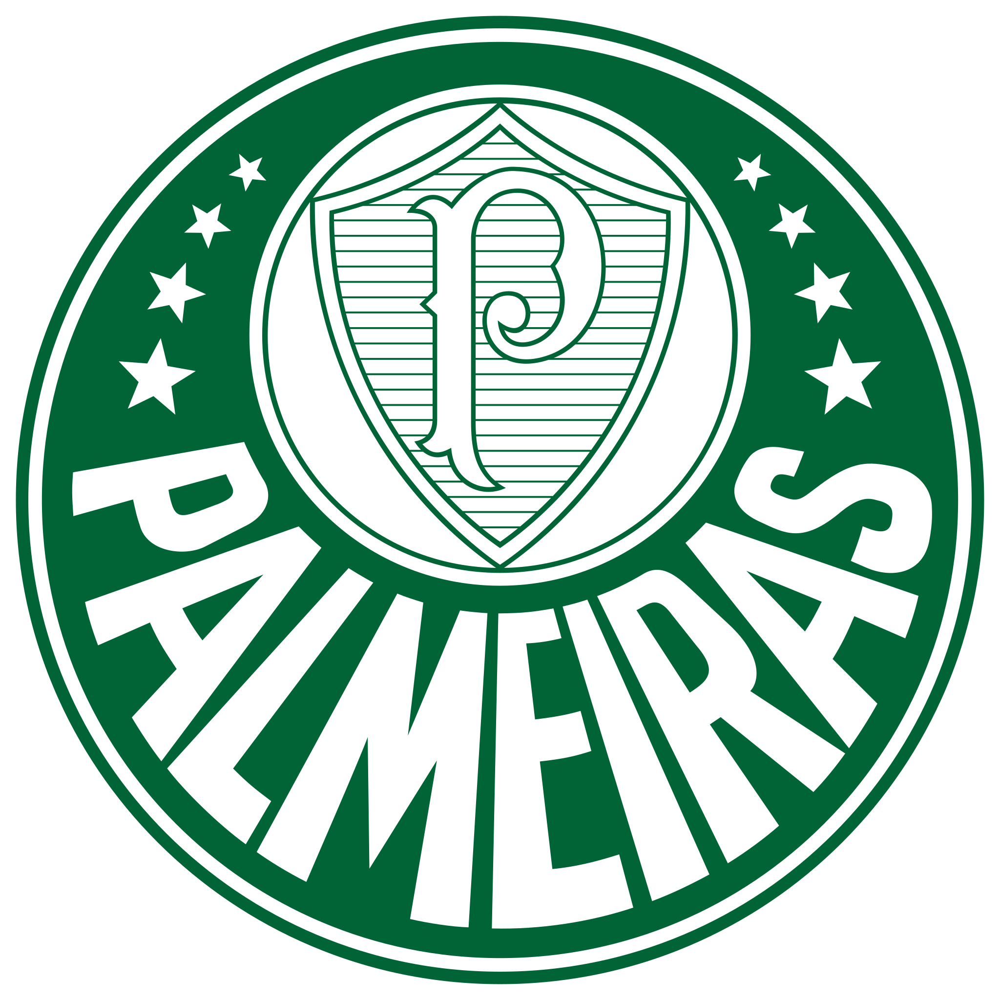

A história do Palmeiras, um dos clubes de futebol mais tradicionais do Brasil, começou em 26 de agosto de 1914, quando foi fundado por imigrantes italianos em São Paulo. Inicialmente, o clube era conhecido como Palestra Italia, e seu objetivo era promover a prática do futebol entre a comunidade italiana. O time rapidamente se destacou nas competições locais, conquistando seu primeiro título em 1920, ao vencer o Campeonato Paulista.
Durante a década de 1930, o Palestra Italia começou a se consolidar como uma força no futebol brasileira, conquistando diversos campeonatos estaduais. Em 1942, devido à Segunda Guerra Mundial e à pressão do governo brasileiro, o clube mudou seu nome para Sociedade Esportiva Palmeiras, um nome que se tornaria sinônimo de sucesso e tradição.
Na década de 1960, o Palmeiras alcançou um novo patamar, conquistando a Copa Rio Internacional em 1951, um dos primeiros torneios de clubes do mundo, que é considerado por muitos como o primeiro torneio mundial de clubes. O clube continuou a brilhar nas décadas seguintes, conquistando títulos importantes, incluindo o Campeonato Brasileiro e a Copa do Brasil.
Nos anos 1990, o Palmeiras viveu uma fase de grande sucesso, com a conquista de vários títulos, incluindo a Copa do Brasil em 1998 e a Copa Mercosul em 1998. O clube também se destacou na era dos investimentos, com a construção de sua nova arena, o Allianz Parque, inaugurada em 2014, que se tornou um dos estádios mais modernos do Brasil.
O Palmeiras é conhecido por sua grande torcida e rivalidades, especialmente com o Corinthians, com quem disputa o clássico conhecido como Paulistão. Ao longo de sua história, o clube acumulou uma rica tradição e uma vasta coleção de títulos, consolidando-se como um dos maiores clubes de futebol do Brasil e da América do Sul. A história do Palmeiras é marcada por conquistas, desafios e uma paixão inabalável por parte de seus torcedores, que continuam a apoiar o clube em todas as suas jornadas.
O Palmeiras é um símbolo de luta e superação no futebol brasileiro.
| Competição | Número de Títulos | Títulos Conquistados |
|---|---|---|
| Campeonato Brasileiro | 12 | 1960, 1967, 1967, 1969, 1972, 1973, 1993, 1994, 2016, 2018, 2022, 2023 |
| Copa Libertadores | 3 | 1999, 2020, 2021 |
| Copa do Brasil | 4 | 1998, 2012, 2015, 2020 |
| Copa Mercosul | 1 | 1998 |
| Recopa Sul-Americana | 2 | 2020, 2022 |
| Supercopa do Brasil | 1 | 2023 |
| Copa dos Campeões | 1 | 2000 |
| Torneio Rio-São Paulo | 5 | 1933, 1951, 1965, 1993, 2000 |
| Campeonato Paulista | 28 | 1920, 1926, 1926, 1927, 1932, 1933, 1934, 1936, 1938, 1940, 1942, 1944, 1947, 1950, 1959, 1963, 1966, 1972, 1974, 1976, 1993, 1994, 1996, 2008, 2020, 2022, 2023, 2024 |
Voltar a história.